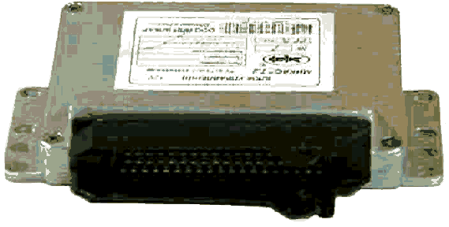
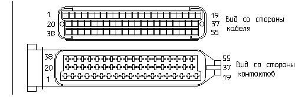

главная → ЭСУД ГАЗ
Блок управления «МИКАС-7»
Внешний вид и конструкция блока «МИКАС-7»

- Блок имеет одноплатную конструкцию и включает элементы:
- основание с двумя боковыми фланцами крепления;
- электронный модуль с 55-контактной вилкой;
- крышка с фирменной этикеткой исполнения блока.
Назначение, основные параметры блока «МИКАС-7»
- Блок предназначен для управления двигателями внутреннего сгорания:
- ЗМЗ-4062.10—с впрыском бензина и электронным управлением;
- ЗМЗ-409.10—с впрыском бензина и электронным управлением;
- ЗМЗ-405.10—с впрыском бензина и электронным управлением;
- ЗМЗ-4063.10—карбюраторный, с электронной системой зажигания;
- ЗМЗ-4061.10—карбюраторный, с электронной системой зажигания.
- УМЗ-4213.10—с впрыском бензина и электронным управлением;
- УМЗ-420.10—с впрыском бензина и электронным управлением.
- Блок является многорежимным цикловым автоматом с разветвленной программой, обеспечивающей регистрацию и обработку информации от датчиков системы для управления исполнительными электромеханизмами двигателя.
- Блок реализован на базе 8-разрядного микроконтроллера фирмы «SIEMENS» и на импортной элементной базе, имеет моноблочную одноплатную конструкцию с 55-контактным электрическим соединителем фирмы AMP.
- Основные параметры блока.
- Условия эксплуатации:
- температура окружающего воздуха: -40°C...+85°C
- относительная влажность при 40°C: 95%.
- Напряжение электропитания: 6В...16В.
- Потребляемый ток при U=12B и отключенных нагрузках: не более 0,2А.
- Масса: не более 1,0кГ
- Габариты: не более 206х160х45мм
Размещение блока «МИКАС-7» на автомобилях
- Блок управления устанавливается на автомобилях ГАЗ в салоне на щитке передка со стороны пассажира.
- Подключение блока к жгуту проводов производится с помощью 55-контактной розетки с защелкой.
- При подсоединении розетки жгута к блоку необходимо соблюдать осторожность и не прилагать больших усилий, чтобы не «смять» штыри вилки блока управления.
- После установки (замены) блока рекомендуется выполнить регулировку двигателя по CO на холостом ходу.
Аналоги блока «МИКАС-7»
- Аналогами блока управления 29ХK.3763-YY «МИКАС-7» являются соответствующие исполнения блоков:
- блок «М1.5.4 АВТРОН» производства АО «РПЗ» г. Раменское;
- блок «М1.5.4 АВТРОН» производства АО «ЧПЗ-ЭЛАРА» г. Чебоксары;
- блок 30.3763 производства АО «СОАТЭ» г. Старый Оскол.
- При замене блока «МИКАС-7» на другой тип необходима предварительная консультация с заводом-изготовителем автомобилей.
Типы и исполнения блоков «МИКАС-7»
- Типы блоков управления:
- «МИКАС-7.1»—для автомобилей ГАЗ;
- «МИКАС-7.2»—для автомобилей УАЗ.
- Обозначение блока «МИКАС-7» по ТУ: 29ХK.3763-YY, где:
- Х—четная цифра для исполнения блока с иммобилизатором, нечетная—без иммобилизатора;
- Х—цифра 1 или 2—для двигателей УМЗ-ХХ;
- Х—цифра 3 или 4—для двигателей ЗМЗ-ХХ;
- К—климатическое исполнение: к=7 для исполнения «У-Т», отсутствие цифры для исполнения «У»;
- YY—номер исполнения по назначению: марка двигателя, комплектация системы управления, тип автомобиля.
- Для примера блок «МИКАС-7.2» имеет следующие исполнения:
- 291.3763000-01—для УАЗ-31625 с двигателем УМЗ-4213.10;
- 293.3763000-01—для УАЗ-3159 с двигателем ЗМЗ-409.10.
Цоколевка блока «МИКАС-7»

| Конт |
Наименование |
Конт |
Наименование |
Конт |
Наименование |
| 1 |
Катушка зажигания 1,4 |
21 |
Формирователь ФВН3 |
41 |
Датчик детонации 2 (+) |
| 2 |
Общий зажигания (GNI) |
22 |
Лампа неисправности |
42 |
Программирование блока |
| 3 |
Реле электробензонасоса |
23 |
Клапан рециркуляции |
43 |
Тахометр |
| 4 |
Регулятор РДВ/цепь 1 |
24 |
Общий зажигания (GNI) |
44 |
Датчик температуры воздуха (+) |
| 5 |
Клапан продувки адсорбера |
25 |
Реле кондиционера |
45 |
Датчик температуры жидкости (+) |
| 6 |
Датчик расхода воздуха (-) |
26 |
Регулятор РДВ/цепь 2 |
46 |
Реле главное |
| 7 |
Датчик расхода воздуха (+) |
27 |
Клемма «15» от зажигания |
47 |
Датчик давления (питание) |
| 8 |
Датчик фазы (+) |
28 |
Лямбда-зонд 1 (+) |
48 |
Датчик частоты (-) |
| 9 |
Датчик скорости (+) |
29 |
Формирователь ФВН2 (МЗ-2,3) |
49 |
Датчик частоты (+) |
| 10 |
Лямбда-зонд 1 (-) |
30 |
Общий датчиков (GNA) |
50 |
Датчик давления (+) |
| 11 |
Датчик детонации (+) |
31 |
Датчик расхода воздуха (прожиг) |
51 |
ФВН (диагностика) |
| 12 |
Датчик дросселя (питание) |
32 |
Расходомер топлива |
52 |
Формирователь ФВН4 |
| 13 |
L-линия диагностики |
33 |
Реле вторичного воздуха |
53 |
Датчик дросселя (+) |
| 14 |
Общий силовой (GNP) |
34 |
Форсунка 4 |
54 |
Датчик положения клапана рециркуляции (+) |
| 15 |
Формирователь ФВН1 (МЗ-1,4) |
35 |
Форсунка 3 |
55 |
К-линия диагностики блока |
| 16 |
Форсунка 2 |
36 |
Потенциометр регулировки CO |
|
|
| 17 |
Форсунка 1 |
37 |
+12 В от реле главного |
|
|
| 18 |
Клемма «30» от АкБ |
38 |
Сигнал системы «ПБС» |
|
|
| 19 |
Общий силовой (GNP) |
39 |
Лямбда-зонд 2 (-) |
|
|
| 20 |
Катушка зажигания 2,3 |
40 |
Запрос кондиционера |
|
|
|